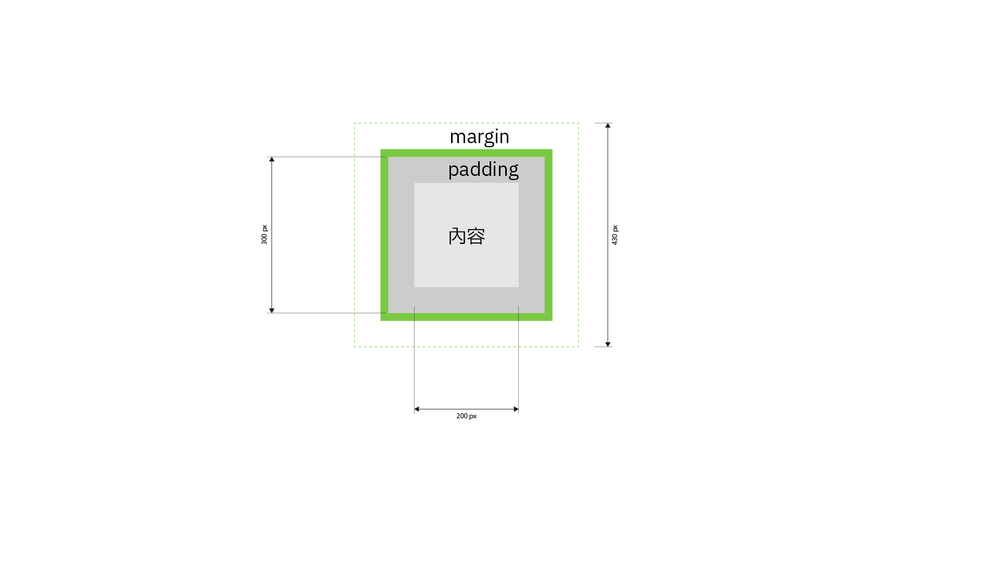

第4-5週：網站架構與佈局
HTML + CSS / 網站佈局
超連結 A 元素
<a href="https://ics.wp.shu.edu.tw">這是一個 A 元素</a>
連結屬性說明
_target="blank"另開視窗download直接下載，檔名為原本的檔名download="cloud.jpg"直接下載，檔名為 cloud.jpg
特殊連結類型
<a href="tel:02-22368225">這是一個 A 元素 指向一個電話號碼</a>
<a href="mailto:someone@example.com">這是一個 A 元素 指向一個信箱</a>
<a href="#section">這是一個 A 元素 指向一個id="section"</a>
CSS 與連結相關的偽類
:link(L): 所有（未點擊）連結:visited(V): 所有點擊過的連結:hover(H): 滑鼠在連結上時的樣子:active(A): 啟動的連結（例如，滑鼠點擊連結時）:focus: 當連結被聚焦的樣子
Box Model

這部分之後再更新
CSS 選擇器
選擇器，可以是：
HTML 標籤#(id).(class)- 其他比較複雜的選擇器（我們之後再教）
CSS 選擇器後面空一格，由 { 開始，每一個屬性都以 ; 結束，最後是 }
養成好習慣，每一句寫完，都加上 ;
常見 CSS 屬性
width 和 height
寬、高，原先沒有給寬高，所有的元素都會以預設的方式呈現，直到給予寬高，才會出現寬高指定的數值。
p {height:30px;}
後面接的單位有 %、auto、px 等
border 框線
border 是框線，由以下屬性構成：
border-style- 框線樣式border-width- 框線寬度border-color- 框線顏色border-radius- 圓角
短寫法
h1 {border: 1px solid red;}
代表 h1 元素四周框線 1px，實線、紅色。
border-style 框線樣式
一旦有 border-style 就會顯示框線，border-style 一定要在 border-width 前面。
方向指定
border-top-style上方框線樣式border-right-style右側框線樣式border-bottom-style下方框線樣式border-left-style左側框線樣式
框線樣式類型
樣式 1：
dotted- 點狀dashed- 虛線solid- 實線double- 會有兩條線的框線groove- 凹陷浮雕效果
樣式 2：
ridge- 凸出浮雕效果inset- 3D 凹陷效果outset- 3D 凸出效果none- 無框線hidden- 隱藏的框線
border-width 框線寬度
四方框線寬度
{border-width:1px 2px 3px 4px;} /* 依序是上右下左*/
{border-width:5px 2px;} /* 這樣寫法是上下 5px 左右 2px*/
方向指定
border-top-width上方框線寬度border-right-width右側框線寬度border-bottom-width下方框線寬度border-left-width左側框線寬度
跳脫字元（ASCII）
因為 < > " & ' 這些符號有意義，需要使用跳脫字元：
| 跳脫字元 | 輸出符號 |
|---|---|
< |
< |
> |
> |
& |
& |
" |
" |
' |
' |
空白字元
| 跳脫字元 | 說明 |
|---|---|
|
半形空白（空白鍵的空白不換行） |
  |
半形空白（半個中文字） |
  |
全形空白（一個中文字） |